Primero que nada, me gustaria explicarles que es un anime shounen, ya que no todos lo saben. Un anime shounen es un anime dirigido a un publico masculino, el cual tiene como objetivo principal la acción y la aventura.
A continuacion les mostrare una lista de animes shounen que he visto.
- Beelzebub (2011)
- Busou Shoujo Machiavellism (2017)
- Dragon Ball (1986)
- Dragon Ball Z (1989)
- Dragon Ball Z Kai (2009)
- Dragon Ball GT (1996)
- Dragon Ball Super (2015)
- Fukigen na Mononokean (2016)
- Handa-kun (2016)
- Hataraku Saibou (2018)
- Jitsu wa Watashi Wa (2015)
- Mekakucity Actors (2014)
- Munou na Nana (2020)
- Nanbaka (2016)
- Oishitsu Kyoushi Heine (2017)
- Saiki Kusuo no Psi-nan (2016)
- Seikaisuru Kado (2017)
- Shuumatsu no Walkure (2021)
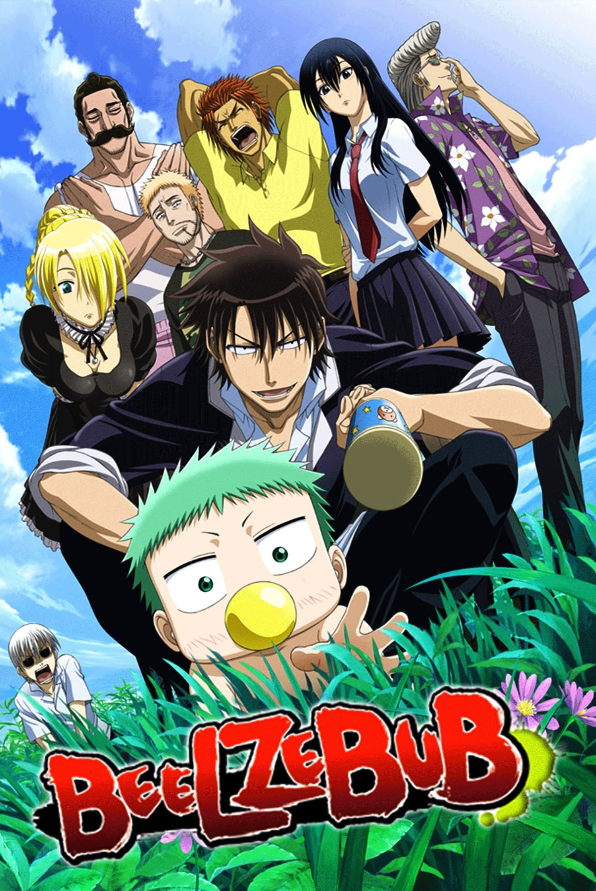
El instituto Ishiyama es un lugar habitado exclusivamente por delincuentes, donde la violencia constante y la anarquía son la norma. Sin embargo, existe una regla universalmente reconocida: no te metas con Tatsumi Oga, el estudiante de primer año y el luchador más temido de Ishiyama. Un día, Oga se encuentra junto al lecho de un río cuando ve a un hombre flotando río abajo. Tras ser rescatado por Oga, el hombre se parte por la mitad, revelando a un bebé que se sube a la espalda de Oga y enseguida se encariña con él. Aunque aún no lo sabe, este bebé se llama Kaiser de Emperana Beelzebub IV, o "Bebé Beel" para abreviar: ¡el hijo del Señor Demonio! Como si encontrar al futuro Señor del Inframundo no fuera suficiente, Oga también se enfrenta a Hildegard, la sirvienta demonio de Beel. Juntos intentan criar al Bebé Beel, pero rodeados de delincuentes juveniles y poderes demoníacos, les espera un desafío mucho mayor del que imaginan.
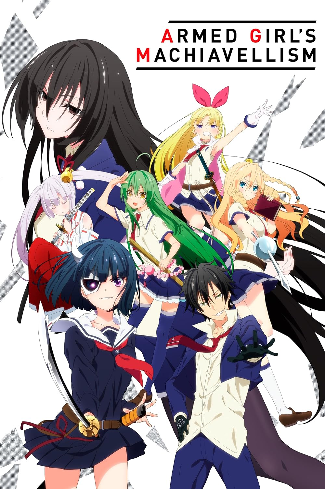
Tras ser expulsado de su anterior escuela, Fudou Nomura decide matricularse en la Academia Privada de Convivencia Aichi. Sin embargo, la academia dista mucho de ser ordinaria: ¡todas las alumnas están armadas! Lideradas por cinco chicas conocidas como las Cinco Espadas Supremas, su objetivo es corregir el comportamiento de los alumnos varones obligándolos a vestirse de mujer e integrarse en el alumnado femenino, o de lo contrario, a abandonar la institución.
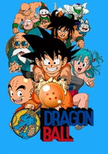
Son Goku es un joven que vive solo en el bosque, hasta que una chica llamada Bulma se topa con él mientras busca un conjunto de objetos mágicos llamados las "Esferas del Dragón". Como se dice que los artefactos conceden un deseo a quien reúna las siete, Bulma espera reunirlas y pedir el deseo de tener el novio perfecto. Goku posee una Esfera del Dragón, pero para desgracia de Bulma, se niega a desprenderse de ella, así que ella le propone un trato: él puede acompañarla en su viaje si le permite usar el poder de la Esfera del Dragón. Con eso, los dos emprenden el viaje de sus vidas.
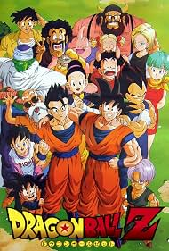
Cinco años después de ganar el torneo mundial de artes marciales, Goku vive una vida tranquila con su esposa e hijo. Sin embargo, esto cambia con la llegada de un misterioso enemigo llamado Raditz, quien se presenta como el hermano perdido de Goku. Raditz revela que Goku desciende de la otrora poderosa raza Saiyajin, ahora prácticamente extinta, cuyo planeta natal fue aniquilado. Cuando fue enviado a la Tierra de bebé, el único propósito de Goku era conquistar y destruir el planeta; pero tras sufrir amnesia por una lesión en la cabeza, su naturaleza violenta y salvaje cambió, y en su lugar fue criado como un niño amable y educado, que ahora lucha para proteger a los demás.
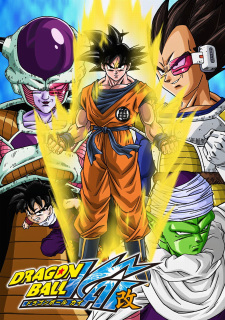
Cinco años después de los eventos de Dragon Ball, Goku, experto en artes marciales, es ahora un hombre adulto casado con Chi-Chi y padre de Gohan, un niño de cuatro años. Durante una reunión en la Isla Tortuga con sus viejos amigos, el Maestro Roshi, Krillin, Bulma y otros, la celebración se ve interrumpida cuando Raditz, un alienígena humanoide, revela la verdad sobre el pasado de Goku y secuestra a Gohan. Dragon Ball Kai es una versión editada y condensada de Dragon Ball Z, producida y lanzada en 2009 para coincidir con el 20 aniversario de la serie original. Además de sus nuevas pistas musicales y el doblaje regrabado, Toei Animation actualizó los efectos visuales de la serie para aprovechar las capacidades de los televisores de alta definición.
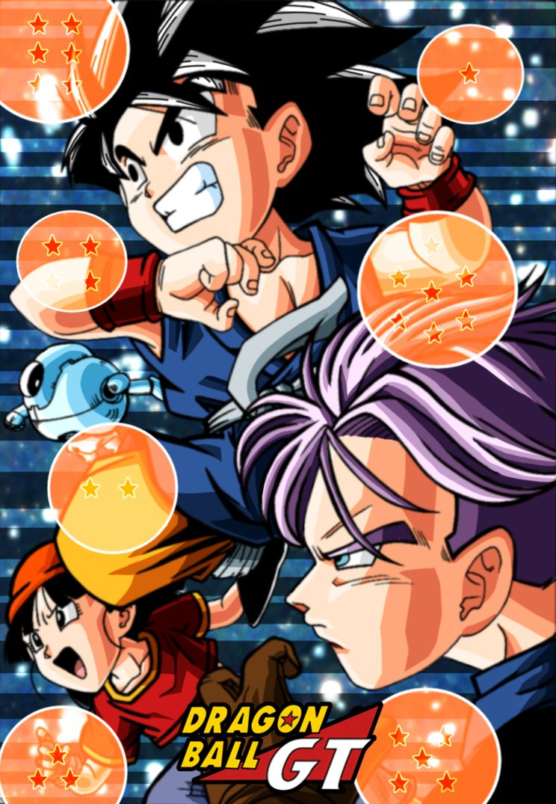
Tras años de búsqueda, el Emperador Pilaf finalmente tiene en sus manos las Esferas del Dragón de Estrella Negra, que se dice que son el doble de poderosas que las terrestres normales. Pilaf está a punto de pedir su deseo de dominación mundial cuando Goku Son lo interrumpe. Como resultado, Pilaf se equivoca al pedir su deseo y accidentalmente convierte a Goku de nuevo en un niño. Tras cumplirse el deseo, las Esferas del Dragón de Estrella Negra se dispersan por la galaxia. Sin embargo, Goku descubre que causarán la explosión de la Tierra a menos que las reúnan todas en el plazo de un año. Junto a su nieta Pan y un joven Trunks, Goku emprende una aventura por el universo para encontrar las Esferas del Dragón de Estrella Negra y salvar a su planeta de la destrucción.
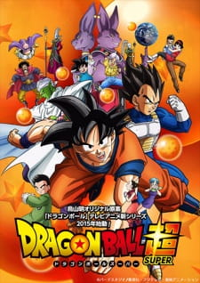
Siete años después de la derrota de Majin Buu, la Tierra vive en paz y sus habitantes, libres de cualquier peligro que aceche el universo. Sin embargo, esta paz es efímera; una amenaza latente despierta en los confines de la galaxia: Beerus, el despiadado Dios de la Destrucción. Perturbado por una profecía que anuncia su derrota a manos de un "Super Saiyajin Dios", Beerus y su asistente angelical Whis recorren el universo en busca de este misterioso ser. Pronto llegan a la Tierra y se encuentran con Goku Son, uno de los guerreros más poderosos del planeta, y sus formidables amigos.
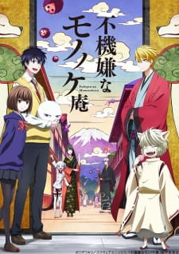
El inicio de la etapa escolar de Hanae Ashiya no ha sido fácil: ha pasado toda la primera semana en la enfermería, y su inexplicable estado no hace más que empeorar. La causa de su tormento es la misteriosa criatura peluda que se le ha adherido desde que la descubrió el día antes de que empezaran las clases. A medida que su salud se deteriora y la criatura crece, Hanae encuentra un folleto que anuncia a un exorcista que expulsa youkai. Desesperado y sin nada que perder, llama al número y lo llevan al Mononokean, una tetería que aparece de repente junto a la enfermería. Un hombre de voz sombría, Haruitsuki Abeno, ayuda a Hanae a regañadientes, pero le exige un pago después. Para su desgracia, Hanae no puede pagar y debe convertirse en empleado del Mononokean para saldar su deuda. Y para colmo, su nuevo jefe es uno de sus compañeros de clase. Si Hanae espera saldar su deuda, deberá colaborar con Abeno para guiar a una variedad de youkai peligrosos, extraños e interesantes de regreso al Inframundo.
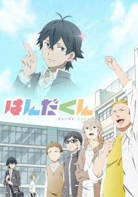
Odiado por todos a su alrededor, Sei Handa vive su vida en el instituto siendo considerado un marginado, o al menos eso es lo que él cree. En realidad, Handa es el estudiante más popular del campus, venerado por todos por su incomparable talento para la caligrafía, su atractivo físico y su personalidad carismática. Sin embargo, debido a una serie interminable de malentendidos, Handa percibe la admiración que recibe de sus legiones de fans como acoso, lo que lleva al ídolo del instituto a aislarse del resto de sus compañeros. Pero su distanciamiento no les impide seguir adorándolo; de hecho, sus intentos por desviar la atención de sí mismo a menudo terminan convirtiendo, sin querer, incluso a los estudiantes más escépticos en fieles seguidores. Modelos, delincuentes solitarios, fans obsesivas y muchos más: nadie puede resistirse al brillo de Sei Handa.
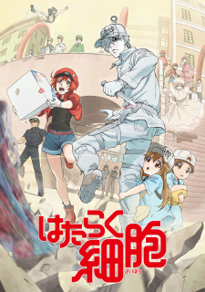
Dentro del cuerpo humano, aproximadamente 37,2 billones de células trabajan enérgicamente las 24 horas del día, los 365 días del año. Recién salido de su entrenamiento, el alegre y algo despistado Sekkekkyuu AE3803 está listo para asumir la importantísima tarea de transportar oxígeno. Como de costumbre, el Hakkekkyuu U-1146 trabaja arduamente patrullando y eliminando bacterias extrañas que buscan convertir el cuerpo en su nuevo hogar. En otro lugar, pequeñas plaquetas se alinean para un nuevo proyecto de construcción. Lidiando con heridas y alergias, perdiéndose en el camino a los pulmones y discutiendo con tipos de células similares, ¡la vida diaria de las células siempre es agitada mientras trabajan juntas para mantener el cuerpo sano!
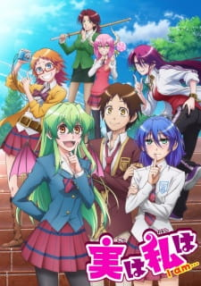
Un día después de clases, Asahi Kuromine descubre que Youko Shiragami, la chica de la que está enamorado, es en realidad una vampira. Según las reglas de su padre, Youko debe dejar la escuela para proteger a su familia. Sin embargo, Asahi no quiere que se vaya y promete guardar el secreto de su verdadera naturaleza. Desafortunadamente, esto resulta ser más difícil de lo que parece, ya que Asahi es un hombre fácil de leer e incapaz de guardar secretos. Y este es solo el comienzo de sus problemas: más seres sobrenaturales entran en su vida y se ve obligado a proteger sus identidades o afrontar las consecuencias.
En el caluroso día de verano del 14 de agosto, Shintarou Kisaragi se ve obligado a salir de su habitación por primera vez en dos años. Mientras discute con Ene, la chica virtual que vive en su ordenador, Shintarou derrama accidentalmente refresco sobre su teclado. Aunque intentan encontrar un reemplazo en línea, la mayoría de las tiendas están cerradas debido al festival Obon, por lo que no les queda más remedio que visitar los grandes almacenes locales. Salir a la calle genera mucha ansiedad en Shintarou, pero la idea de vivir sin su ordenador es aún peor. Para su mala suerte, el día que finalmente sale, se ve envuelto en una aterradora situación de rehenes. Por suerte, un grupo de adolescentes con misteriosos poderes oculares, que se hacen llamar "Mekakushi Dan", ayudan a Shintarou a resolver la situación. Como resultado, se ve obligado a unirse al grupo, junto con Ene. Sus habilidades parecen encajar a la perfección, y a medida que se revela el pasado de cada miembro, el secreto que los une sale a la luz poco a poco.
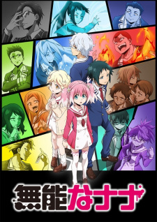
Hace cincuenta años, criaturas horribles, conocidas como los "enemigos de la humanidad", aparecieron repentinamente por todo el mundo. Para combatir estas amenazas, adolescentes dotados de habilidades sobrenaturales llamadas "Talentos" —como la piroquinesis y los viajes en el tiempo— perfeccionan sus poderes en una academia en una isla apartada. Nanao Nakajima, sin embargo, es muy diferente de los demás en la isla: no tiene ningún Talento. Rodeado de tantos adolescentes "Talentosos", Nanao suele ser blanco de acoso, pero aun así, se esfuerza por completar su entrenamiento. Poco después, dos estudiantes transferidos, el misterioso Kyouya Onodera y la telépata Nana Hiiragi, se unen a la clase. Pero justo cuando todos empiezan a integrarse como compañeros de armas, misteriosas desapariciones comienzan a amenazar los cimientos de la clase.
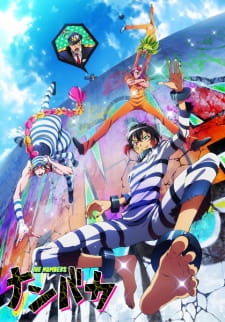
Nanba es la prisión más formidable del mundo, construida para encarcelar a criminales demasiado escurridizos para permanecer en un confinamiento ordinario. Los cuatro reclusos que ocupan la celda 13 son particularmente astutos, habiendo escapado de todas las demás prisiones con un éxito rotundo. Están Juugo, un especialista en cerraduras que ha pasado la mayor parte de su vida en prisión; Uno, un jugador con una gran intuición; Nico, un otaku cuyo cuerpo reacciona extrañamente a las drogas; y Rock, un matón con una pasión por la comida. Las travesuras diarias de los cuatro prisioneros siempre causan problemas al supervisor del edificio, Hajime Sugoroku, quien intenta desesperadamente evitar que escapen de Nanba.
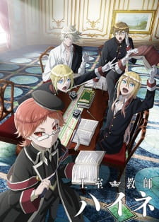
Igualmente encantador y severo, Heine Wittgenstein es un hombre brillante que inspira respeto, a pesar de su baja estatura y aspecto infantil. Por ello, el rey de Grannzreich le ha encomendado una tarea ardua que ha ahuyentado a muchos antes que él: convertirse en el nuevo tutor real de cuatro príncipes herederos al trono.
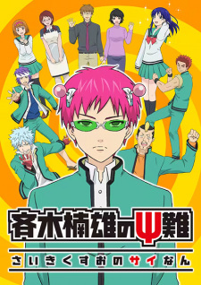
Para la persona promedio, las habilidades psíquicas podrían parecer una bendición; sin embargo, para Kusuo Saiki, nada más lejos de la realidad. Dotado de una amplia gama de habilidades sobrenaturales, desde telepatía hasta visión de rayos X, considera que esta supuesta bendición no es más que una maldición. A medida que se acumulan los inconvenientes que le causan sus poderes, lo único que Kusuo anhela es una vida normal y tranquila, una vida donde la ignorancia sea la felicidad.
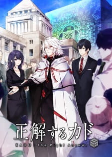
Sereno y racional, Koujirou Shindou es un funcionario gubernamental y maestro negociador con una reputación bien merecida. Mientras se dispone a partir en un viaje de negocios, un cubo gigante se materializa y su avión es absorbido ileso por la misteriosa e indestructible estructura. Mientras las autoridades japonesas intentan identificar las propiedades y el origen del cubo, Shindou se encuentra con una entidad de otro mundo conocida como Yaha-kui zaShunina, quien se materializa en forma humana. Le asegura a Shindou que los pasajeros no corren peligro y le pide ayuda en las negociaciones con el mundo humano.
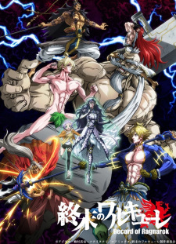
Los dioses del mundo —desde la mitología griega hasta la nórdica e hindú— se reúnen cada mil años para tomar una decisión crucial: aniquilar o no a la humanidad. Repugnados por el egoísmo humano, el consejo vota unánimemente por la destrucción de todos los humanos. Pero antes de que se ejecute el decreto, Brunilda, una de las trece valquirias del Valhalla, interrumpe la reunión para darle a la humanidad una oportunidad de sobrevivir. Brunilda propone la idea de celebrar el Ragnarök, un evento en el que los trece guerreros mortales más fuertes luchan contra trece dioses en duelos individuales. Aunque los dioses ridiculizan la prueba, la semidiós se aprovecha de su orgullo y los obliga a llegar a un acuerdo. Sin embargo, Brunilda misma debe reclutar a los héroes más poderosos de la historia milenaria de la humanidad y guiarlos hacia la victoria antes de que encuentren su fin.